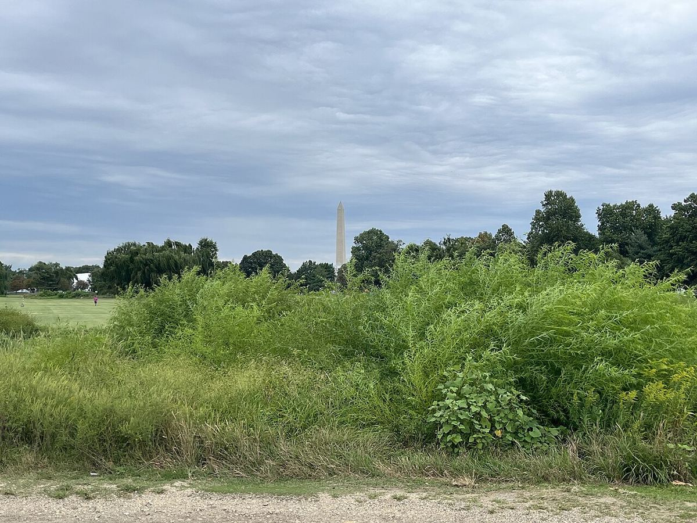

Justice Department Moves to Remove Judge in East Potomac Golf Course Case
In a 14-page motion filed late Friday, Associate Attorney General Stanley Woodward accused Judge Ana Reyes of deep-seated antipathy toward the Trump administration and asked that the East Potomac Golf Course case be handed to another judge.

Key points
- Updated 23:31 UTC, Oct 19, 2026.
- Updated 13:31 UTC, Oct 19, 2026.
- Updated 21:38 UTC, Oct 18, 2026.
Updated 23:31 UTC, Oct 19, 2026. Judge Ana Reyes ended a long hearing on Monday without deciding whether to impose a longer-term order limiting work at East Potomac Golf Links, after hours of testimony in which the officials who run the course said they knew nothing about the closure President Donald Trump has announced. Reyes told Associate Attorney General Stanley Woodward: "I don't know what to do, when I keep getting different stories." She put the conflict plainly: "I have, on the one hand, the president of the United States saying to the American people three times now, I think, in the last two days, there is a final plan to redesign the golf course. Then I have you all telling me and, you know, witnesses saying what they're saying, that there's no final plan. Which is it?" Jessica Bowron, the acting director of the National Park Service, who signed off on cutting more than 400 trees at the course this month, testified that she was not aware of any plan to close the course next month and had not taken part in discussions about renovating it. Greg Wischer, a deputy chief of staff at the Interior Department, testified that he had received conceptual proposals from golf course designer Tom Fazio and his son Gavin, and that he first saw the rendering Trump posted on Sunday when Gavin Fazio texted it to his personal phone. Woodward told the judge there is "no plan to close the course, as those words have their literal meaning," and confirmed there is no contract with the Fazios. Reyes is now considering whether to issue a longer-term order restricting what the administration can do at the course, including cutting more trees. Her current order bars further tree removals before October 26 and requires at least three days notice before any irreparable change.
Updated 13:31 UTC, Oct 19, 2026. Judge Ana Reyes late on Sunday rejected the Justice Department request that she step aside from the East Potomac Golf Course case. In a 13 page opinion she wrote: "It is easy to weaponize selective quotations to bring a baseless recusal motion. But it is much harder to meet the demanding legal standard against a full record." She added: "By any objective measure, the Government fails to meet the standard for recusal." Reyes answered the bias claims one by one, pointing to hearing transcripts in which she had praised government lawyers and to earlier stages of the case where she had held off ruling against the administration, Bloomberg Law reported. In a separate filing on Sunday, Associate Attorney General Stanley Woodward told the court the plans for the golf course are not final, despite the president's announcement, and so cannot be challenged in court under administrative law, Bloomberg Law reported. Early on Monday, President Donald Trump attacked Reyes in a post on Truth Social, calling her a "crazed lunatic" and saying the Interior Department has "an absolute right" to carry out the work. "They do not need an approval. Work is scheduled to begin IMMEDIATELY!" he wrote, CNN reported. On Sunday he had said the work would begin next month. Reyes has ordered the government to give at least three days notice before any irreparable change to the course, and no more trees are to be cut before October 26. Gregory Wischer of the Interior Department and Jessica Bowron of the National Park Service are expected to testify at a hearing later on Monday, and Woodward was also ordered to attend.
Updated 21:38 UTC, Oct 18, 2026. US District Judge Ana Reyes has ordered the government to tell her by 8 p.m. Eastern on Sunday whether its position has changed after President Donald Trump's post announcing a November 15 start for the renovation. In a court filing on Friday, the government said Trump had at most given preliminary thought to the rebuilding plan and that there was no final agency action, the Associated Press reported. The Wall Street Journal reported that Reyes, citing Trump's Truth Social post, asked whether the government is still arguing that no final action has been taken to renovate the course. The parties are due back in court on Monday, October 19, for arguments over an injunction to stop more trees being cut while the case runs.
Updated 18:17 UTC, Oct 18, 2026. President Donald Trump said on Sunday that renovation work at East Potomac Golf Links will begin on November 15 and that the public course will reopen in about 15 months, pressing ahead with the overhaul even though a federal judge has ordered the government to notify the court before any major construction and has halted tree removals at the site. In a post on Truth Social that included a rendering of the redesign, Trump wrote that when completed the course will be open to the public and designed to the highest level of golf, able to hold world class tournaments such as the US Open, the PGA Championship, the Ryder Cup and the Presidents Cup. Golfweek reported the redesign is by architect Tom Fazio, that the plan calls for repairs to the course seawall, and that it is expected to remove picnic areas, bike lanes, playgrounds and other recreation areas. The Associated Press reported that a judge last week ordered a halt to the redevelopment until at least October 26, after scolding the government for cutting trees over a holiday weekend with little notice to the court or the plaintiffs. The White House did not immediately respond to a request for comment on whether the announcement conflicts with the directives of US District Judge Ana Reyes, Reuters reported. The DC Preservation League, which sued in February to halt the administration takeover of the course, said on Sunday it would keep working to protect the course from what it called unlawful and harmful intrusion, the Wall Street Journal reported. A hearing in the case is set for Monday, October 19.
WASHINGTON. The Justice Department has asked that the federal judge overseeing the legal fight over President Donald Trump's planned overhaul of East Potomac Golf Course be removed from the case, accusing her of bias against the administration.
Associate Attorney General Stanley E. Woodward filed the motion at 8:33 p.m. ET on Friday. The 14-page filing asks that US District Judge Ana Reyes be disqualified and the case transferred to another judge. It also asks the court to release the audio of a tense hearing on Monday, October 12, so the public can hear her remarks.
"Judge Reyes's conduct rises to the level of deep-seated and unequivocal antipathy toward the Trump Administration," the filing said. "The Trump Administration is entitled to a neutral forum and an adjudicator who is capable of maintaining the appearance of impartiality. Judge Reyes has demonstrated she cannot do that." Woodward called her behavior in the case "nothing short of egregious." He pointed to comments she made in other cases involving the administration as a pattern of animus, among them her handling of the ban on transgender service members, where the filing says she accused the administration of "literally erasing transgender people" before she blocked the ban.
Trees cut over a weekend
The fight centers on trees. Trump wants to turn the public course in East Potomac Park into a championship caliber course. The plan is one of several construction projects he has started in the capital since returning to the White House. The DC Preservation League and two local residents sued to stop the work.
On Friday, October 9, at 4:55 p.m., just before a holiday weekend, the government posted a plan to remove up to 529 trees to restore the course's historic links style character. Crews began cutting at about 8 a.m. on Saturday. The National Park Service removed about 430 healthy, non-invasive trees over the weekend, even though Reyes had warned the government to give the court notice before any major work at the course.
At Monday's hearing, Reyes said she was furious. She said "the government can't be trusted" and told officials, "You did your absolute worst." On Tuesday, October 13, the court approved a 14-day temporary restraining order that keeps federal officials from felling more trees at the course. The government argues the cutting was authorized tree maintenance in East Potomac Park. Federal officials have said nearly 730 trees will need to be cleared under the full renovation plan, describing the work as routine maintenance meant to eliminate potential hazards.
A hearing on Monday
Woodward also objected to Reyes requiring high-level officials to attend the next hearing, writing that it shows a cavalier disregard for the officials' time and for separation of powers principles. A hearing in the case is scheduled for Monday, October 19, at 10 a.m. ET. The plaintiffs opposed the request to disqualify Reyes in a separate filing, and left the release of Monday's hearing audio to the court's discretion.
Reyes was appointed to the bench by former President Joe Biden. At the time this article was first published, she had not responded publicly to the motion, and the request sat with the court days before officials were due back in front of her.
Timeline
- Oct 9, 2026The government posts a plan at 4:55 p.m. ET to remove up to 529 trees at East Potomac Golf Course in Washington.
- Oct 10, 2026Crews start cutting at about 8 a.m. About 430 healthy trees come down over the weekend.
- Oct 12, 2026At a hearing, Judge Ana Reyes says she is furious the court was not notified first and tells officials, "You did your absolute worst."
- Oct 13, 2026A 14-day temporary restraining order stops federal officials from felling more trees at the course.
- Oct 16, 2026Associate Attorney General Stanley E. Woodward files a 14-page motion at 8:33 p.m. ET asking that Reyes be disqualified from the case.
- Oct 18, 2026Trump announces on social media that East Potomac Golf Links will close on November 15 for a renovation expected to last about 15 months.
- Oct 18, 2026Judge Ana Reyes orders the government to tell her by 8 p.m. Eastern on Sunday whether its position has changed after Trump's announcement, ahead of a Monday hearing.
- Oct 18, 2026Judge Ana Reyes rejects the Justice Department request that she step aside, calling the recusal motion baseless in a 13 page opinion.
- Oct 19, 2026Trump posts early Monday that work will begin immediately and calls Reyes a "crazed lunatic", hours before officials are due to testify at a hearing in the case.
- Oct 19, 2026At a long hearing, Judge Reyes ends the day without a ruling after National Park Service and Interior officials testify they know of no final plan or closure, despite the president's posts.
Sources
- CNN: Trump administration seeks to remove judge in golf course case, accusing her of 'egregious' behavior
- Golf Channel: East Potomac Golf Course: Trump admin seeks to remove judge for bias
- Bloomberg Law: DOJ Official Requests New Judge in Golf Course Case After Rebuke
- Reuters: Trump says Washington golf course renovation to start in November, despite judge's order
- Associated Press via TSN: Trump says he will close historic DC golf course for 15 months of renovations
- Wall Street Journal: Trump Presses Ahead With Plans to Remake Washington Golf Course
- Golfweek: Donald Trump announces East Potomac Golf Course will close Nov. 15 for a 15-month renovation
- New York Post: Trump unveils 15-month plan to renovate historic DC golf course
- Bloomberg Law: Judge Rejects 'Baseless' DOJ Bid to Recuse From Golf Course Case
- CNN: Trump doubles down on golf course renovation plan as legal battle continues
- The Hill: Judge Ana Reyes denies DOJ request to recuse herself from East Potomac Park case
- USA Today: Judge scrutinizes Trump's DC golf overhaul as he calls her 'crazed lunatic'
- NPR: Judge chastises Trump administration plan to push ahead overhaul of DC golf course